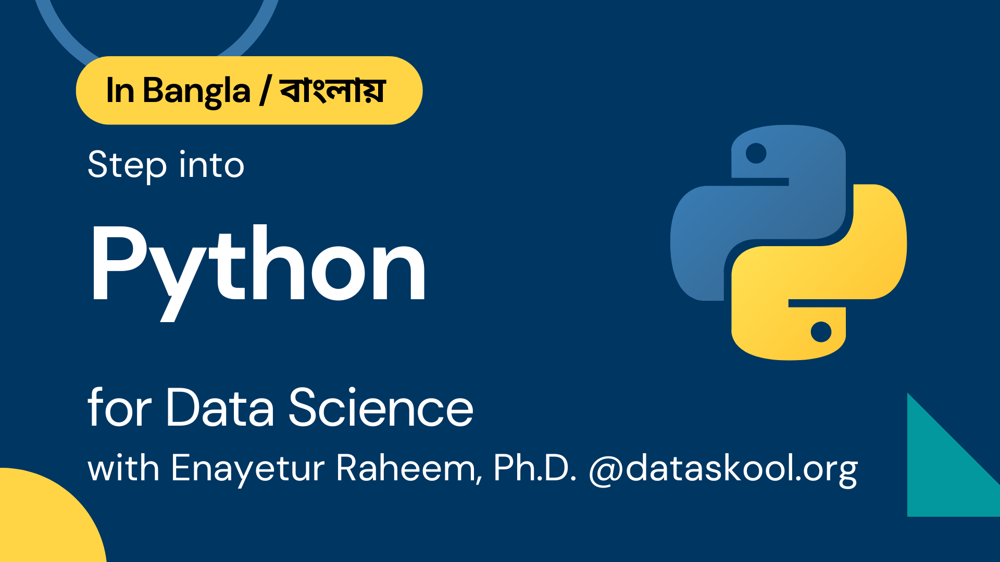

Outline
Chasing Python is a collection of courses at dataskool.org taught by Dr. Enayetur Raheem.
Books in this bundle
- Step into Python (Python basics for data science)
- Numpy for scientific computation
- Pandas for data wrangling
- Matplotlib and Seaborn for data visualization
- Scikit-Learn for Machine Learning
How to contact me
This is a tentative outline and may be updated as I build the teaching materials. If you have any question, please reach out to me via Social media:

Course 1: Step into Python for Data Science
Why this course?
- My journey to Python
- Importance of Python in Artificial Intelligence
- R or Python?
- Anything statistical in nature: use R
- Anything machine learning: use Python
Finding Python
- Where do you find Python?
- Show examples of python script
Getting/Installing Python
- Using Google Colab
- Using Anaconda python distribution
- installing in Windows
- installing in Mac
Python Fundamentals
- Example of a python program (.py script)
- Running a python program
.pyscript- Jupyter notebook
Variables and Data Types
- Variable and Expression
- Numerical data type (integer, float)
- String data type
Different types of operators
- Assignment operators (=, +=)
- Arithmetic operators (additio, subtraction)
- Comparison operators (greater than, less than)
- Logical operators (AND, OR NOT)
- Bit manipulation operators (&, |)
- Operator precedence
Control Flow
while,if,elsestatementscontinueandbreakstatements
Reading Input Data
- Opening a file and reading it
- Storing the data
- Outputing the data
Data Structures
- Lists
- Tuples
- Dictionaries
- Sets
Working with Lists
- Fundamental features of
listdata structure
Working with Tuples
- Fundamental features of
tupledata structure
Workign with Dictionaries
- Fundamental features of
dictionarydata structure
Working with Sets
- Fundamental features of
setdata structure
Performing operations iteratively
- the famous
forloop
Understanding Functions
- Introduce function using day-to-day example
- What is function in Python
- Why Function is even needed
Object Oriented Programming (OOP)
- Concept of Objects and Classes
- Difference between functional programming and OOP
Modules and Packages
- Modules are collection of python scripts
- Packages are collection of modules